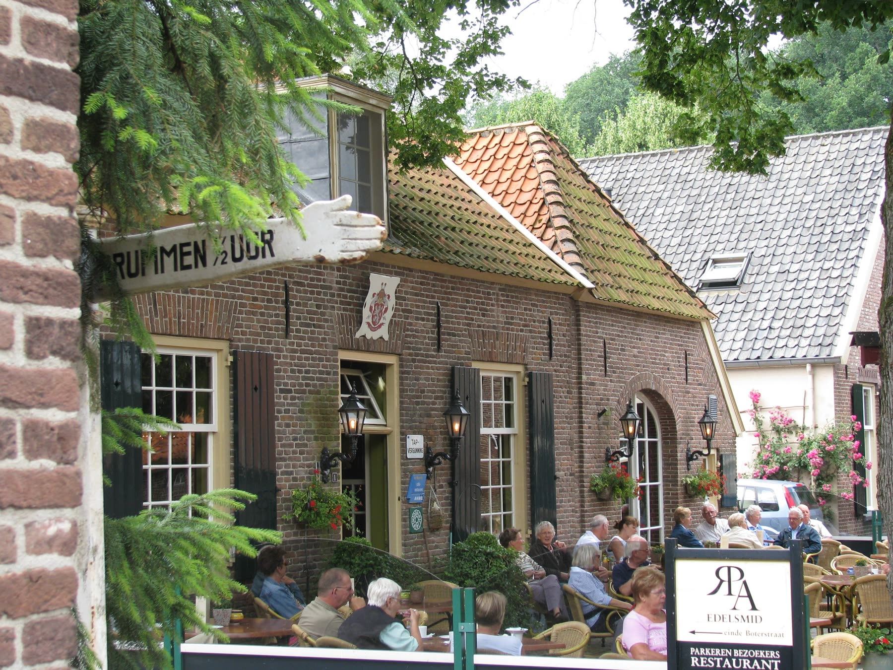
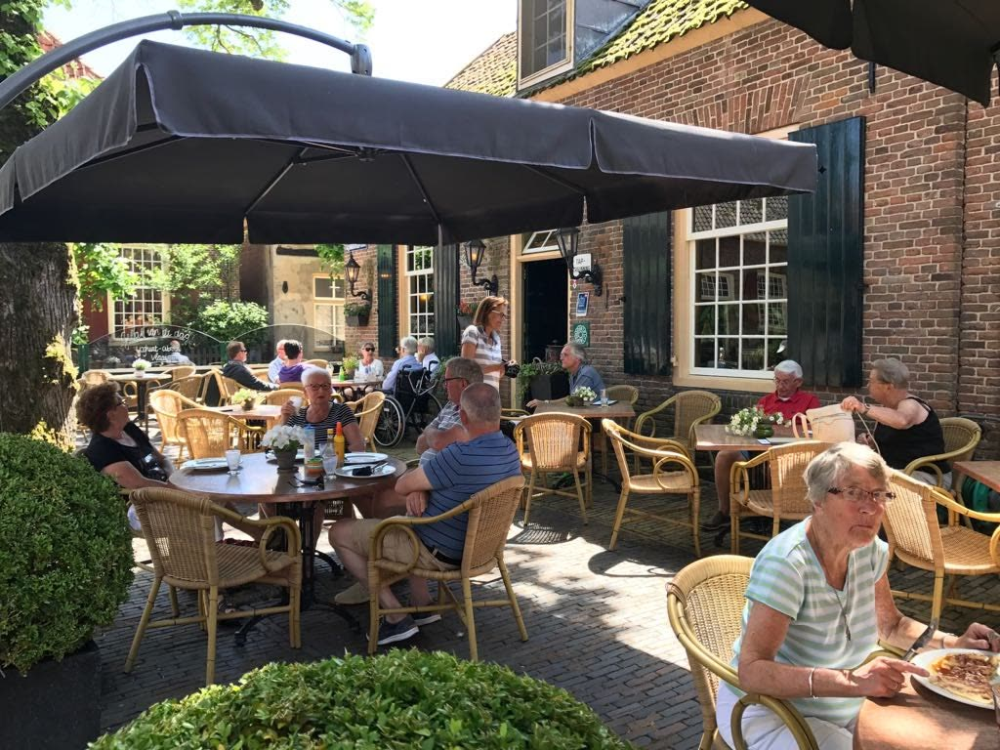
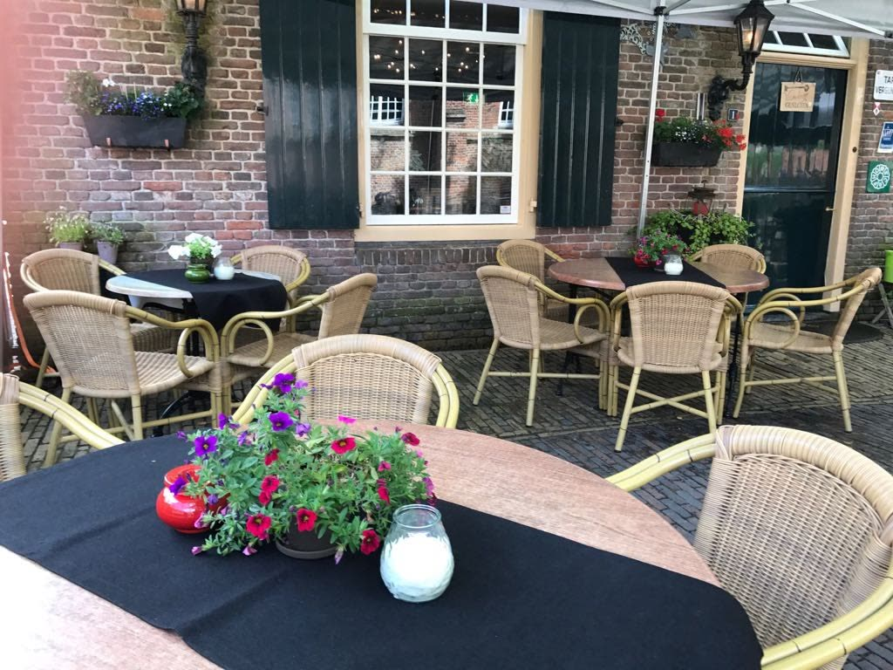
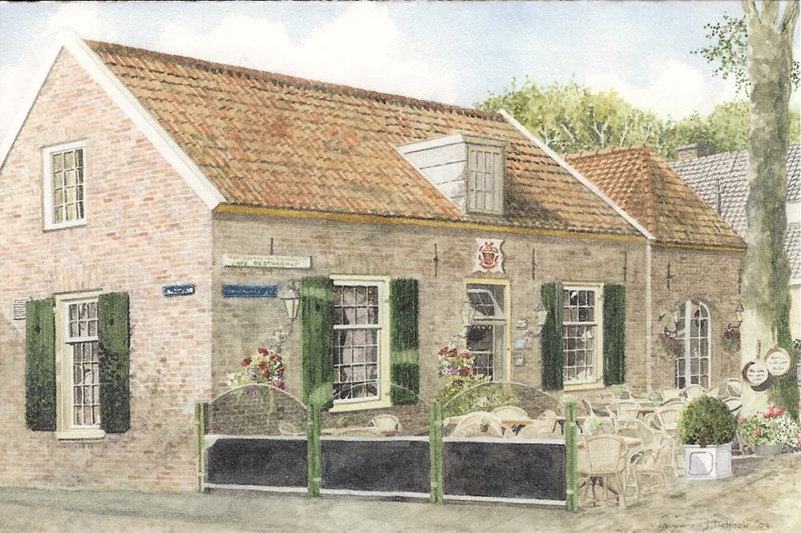

Bronkhorst, de kleinste stad van Nederland
Het Wapen van Bronkhorst
Al generaties het restaurant van de familie Meutstege. Lunch, diner en de seizoenen op het bord: asperges in het voorjaar, wild in de herfst, stamppotten in de winter.
Nu op de kaart: wild. De dinerkaart met wildgerechten is geldig vanaf 23 oktober 2026, te bestellen vanaf 17.00 uur.
Kerst en oud & nieuwDinerkaart met wild
Geldig vanaf 23 oktober 2026, te bestellen vanaf 17.00 uur. Voor het diner is reserveren gewenst. Heeft u een allergie? Meld het ons of vraag naar de allergenenkaart.
Voorgerechten
- HertencarpaccioTête de Moine, gebakken paddenstoelen, peperkoek-uienchutney€ 16,50
- WildproeverijDrie variërende gerechtjes van wild€ 14,50
- RundercarpaccioOude kaas, truffelmayonaise€ 16,50
- Tompouce bospaddenstoelenCrème fraîche, rucola€ 12,50
- Krokante mosselenWarme knoflooksaus€ 11,50
Soepen
- Knolselderij-pastinaaksoepOlie van prei, chorizo€ 9,00
- WildbouillonPaddenstoelen€ 9,00
Desserts
- Crème brûléeKaneelijs€ 11,50
- VanilleijsMet warme kersen, advocaat, boerenjongens of chocoladesaus (+0,75)€ 11,50
- Trifle met chocolademousseBrownie, hazelnoot, peer€ 12,50
- Koffie compleetKoffie of thee met zoete lekkernijen€ 9,50
Hoofdgerechten
- WildpeperKlassiek garnituur van puree, rode kool en spruiten€ 29,50
- Halve gebraden fazanthaanZuurkool en rookworst€ 30,00
- Duo van wildWisselende wildgerechten van het moment€ 29,50
- HertenbiefstukKlassiek garnituur van puree, rode kool en spruiten, wildjus€ 33,00
- Kalfs ossobuccoPaddenstoelenrisotto€ 30,50
- PortobelloGevuld met brie, spinazie en geitenkaas, saus van balsamico en sjalot€ 26,50
- Vis van de dagDagverse vis van de Dutch Canadian Foodlinedagprijs
Lunchkaart en dranken
Lunchen van 12.00 tot 16.00 uur. Ook voor iets bij de koffie of de borrel bent u welkom.
Uitsmijters
- Kaas of ham€ 12,75
- Ham-kaas of spek€ 13,25
- Rosbief€ 14,75
- Bronkhorster uitsmijterMet salami en oude kaas€ 13,95
Omeletten
- Naturel€ 13,25
- Champignons€ 13,95
- Ham of kaas€ 13,95
- Ham-kaas€ 14,25
- Boerenomelet€ 15,95
Soepen
- Champignonsoep€ 8,50
- Knolselderij-pastinaaksoepOlie van prei, chorizo€ 8,50
Lunchtips
- 12-uurtjeRundvleeskroket, gebakken eitje met ham en kaas, salade en soep naar keuze€ 16,95
- TwijfelaartjeKlein broodje carpaccio, soep naar keuze en iets zoets€ 15,50
Landbrood, wit of bruin
- 1 rundvleeskroketMet Doesburgse mosterd€ 9,75
- 2 rundvleeskrokettenMet Doesburgse mosterd€ 13,50
- Tuna meltGesmolten kaas, huisgemaakte tonijnsalade€ 14,50
- Pecorino met truffelPecannoten, appel-peerchutney€ 16,00
- CarpaccioMet truffelmayonaise en oude kaas€ 16,00
- Pikant gebakken kippendijMet champignons, paprika en ui€ 14,50
Tosti’s
- Kaas of ham€ 6,00
- Ham-kaas€ 6,75
- PaniniGrillworst, belegen kaas, rode ui en chipotlesaus€ 9,50
Pannenkoeken
- Naturel€ 9,75
- Spek, kaas of appelPer ingrediënt+2,95
- NajaarspannenkoekStoofpeer, geitenkaas, pecannoten, balsamico€ 12,50
Snacks, per stuk
- Bitterballen€ 1,20
- Kipkrokantjes€ 1,20
- Mini kaassoufflé€ 1,20
- Mini frikandellen€ 1,00
- Bamihapjes€ 1,35
- Kaasstengels€ 1,25
- Krokante garnalen€ 1,25
- Vegetarische bitterballen€ 1,35
- Portie boerenkaas€ 9,50
- BorrelplankVanaf twee personen€ 19,50
Gebak
- Appelgebak€ 4,25
- Appelgebak met slagroom€ 5,00
- Gebak van de dagIndien voorradig€ 5,50
- Kruidkoek€ 3,00
IJscoupes
- Vanilleijs met verse aardbeien€ 11,50
- Vanilleijs met chocoladesaus€ 12,25
- Mokkaijs met nootjes€ 11,50
- Yoghurt-bosvruchtenijs€ 11,50
Koffie en thee
- Koffie€ 3,75
- Cappuccino€ 4,25
- Koffie verkeerd€ 4,25
- Latte macchiato€ 4,50
- Flat white€ 4,95
- Espresso€ 3,50
- Doppio€ 4,95
- Thee, diverse smaken€ 3,25
- Muntthee met honing€ 4,95
- Gemberthee met honing€ 4,95
- Warme Chocomel€ 4,50
- Warme Chocomel met slagroom€ 5,25
- IJskoffieMet ijs van ijsboerderij De Steenoven in Hummelo, karamel en slagroom (hoogseizoen)€ 6,95
Frisdranken
- Pepsi Cola, Pepsi Max€ 3,65
- Sourcy rood, Sourcy blauw€ 3,65
- Sinas, cassis, Rivella€ 3,65
- Bitter lemon, tonic, 7-up€ 3,65
- Ginger ale, ginger beer€ 3,90
- Ice tea sparkling, ice tea green€ 3,90
- Crodino€ 3,65
- Verse jus d’orange€ 4,95
- Tomatensap€ 3,95
- Chocomel€ 3,95
- Glas ranja€ 2,50
- Melk, karnemelk€ 3,65
Smoothies
- Smoothie rood fruit, 300 mlFramboos, aardbei, appelsap€ 7,50
- Smoothie tropical, 300 mlMango, aardbei, jus d’orange€ 7,50
Van de tap
- Grolsch 0,25€ 3,90
- Grolsch 0,5€ 6,90
- Grolsch Weizen (seizoen)€ 5,65
- Grolsch Weizen 0,5€ 8,65
- Grimbergen Blond of Dubbel€ 6,90
- Fourchette€ 6,90
- Herfstbok (seizoen)€ 6,90
Uit de fles
Alle flesjes € 4,50 volgens de kaart.
- Grolsch 0.0%€ 4,50
- Grolsch Radler 0.0%
- Grolsch Weizen 0.0%
- Affligem Blond 0.0%
- Liefmans 0.0% (seizoen)
- Liefmans 3,8% (seizoen)
Cocktails
- Aperol spritzAperol, prosecco, bruiswater€ 9,50
- Limoncello spritzLimoncello, prosecco, bruiswater€ 9,50
- Watermelon FitzWatermeloen, wodka, limoen, 7-up€ 9,50
- Pornstar martiniPassievrucht-vanillecocktail€ 11,95
- Espresso martiniWodka, Kahlúa, espresso€ 11,95
Open wijnen, glas / fles
- Pinot Grigio, EpicuroTerre Siciliane, Italië. Bloemig, fris, perzik en peer€ 5,95 / 28,50
- Chardonnay Barrel Fermented, Principe de VianaNavarra, Spanje. Fris, tropisch, vol van smaak€ 5,95 / 28,50
- Bereich Bernkastel, Peter Meyer (zoet)Mosel, Duitsland. Lichtzoet en fris€ 5,95
- Rosé: Epicuro RosatoPuglia, Italië. Crispy, fris, kruidig, sappig€ 5,95 / 28,50
- Rood: Bons Ventos, Casa Santos LimaVinho Regional Lisboa, Portugal. Sappig, aromatisch, bessen, vleugje eiken€ 5,95 / 28,50
- Rood: Primitivo di Manduria, Lu RappaioItalië. Aardbei, kruiden, braam, zoet, viooltje€ 7,75 / 37,50
Witte wijnen per fles
- Sauvignon Blanc, Twin IslandsMarlborough, Nieuw-Zeeland. Fris, tropisch, citrus en verse kruiden€ 35,50
- Riesling Trocken, Ellermann SpiegelPfalz, Duitsland. Delicaat, fruitig, sappig, fijne zuurgraad€ 35,50
- Grüner Veltliner, Weingut SteiningerKamptal, Oostenrijk. Elegant, fruitig, mineralen, intrigerend pepertje€ 35,50
Rode wijnen per fles
- Valpolicella Classico Superiore, FarinaVeneto, Italië. Intens, rijk, rijp, amandel, kersen€ 35,50
- Spätburgunder (Pinot Noir) Trocken, Ellermann SpiegelPfalz, Duitsland. Kruidig, rijp, sappig, bosfruit€ 35,50
- Tempranillo, Ramón Bilbao CrianzaRioja, Spanje. Intens, krachtig, rijk, pruimen, kokos€ 37,50
Kelderjuweeltjes
- Chardonnay, Kendall-Jackson Vintner’s ReserveCalifornia, Verenigde Staten. Romig, tropisch, vol, tonen van mango€ 48,50
- Zinfandel, Kendall-Jackson Vintner’s ReserveCalifornia, Verenigde Staten. Krachtig, donker fruit, kruidig, cederhout€ 49,50
- Cabernet Sauvignon, Kendall-Jackson Alexander ValleyHawkeye Mountain, California. Krachtige, elegante cabernet met aroma’s van cassis, bramen en kersen€ 97,50
Goed om te weten: u kunt bij ons niet apart afrekenen, we hanteren één gezamenlijke rekening per tafel. We wisselen ook geen geld voor de veerpont.


Een groot terras op het plein
Op mooie dagen zit u buiten voor de deur, midden in het beschermde stadsgezicht. Voor de lunch reserveren we geen tafels op het terras: kom gerust langs.
Kerst en oud & nieuw
Voor deze speciale avonden is reserveren noodzakelijk.
- Gesloten
- Eerste en tweede kerstdag geopend voor het kerstdiner, vanaf 17.00 uur
- Stamppotten, bubbels & oliebollen
- Gesloten
Het restaurant in Bronkhorst
Een gerenommeerde keuken met à la carte, plateservice en lunch, in een sfeervol interieur, met een gezellig groot terras. We passen onze menu’s aan naar het seizoen: asperges in april, wild in oktober en in de wintermaanden onze bekende stamppotavonden.
- Partijen tot 60 personen
- Buffetten
- Seizoensspecialiteiten: asperges, wild en stamppotten
Wij wensen u smakelijk eten en een prettig verblijf in ons restaurant.
Familie Meutstege en team

“De invallende duisternis, de gezellige lichtjes achter de ramen: het geeft het beschermde dorpsgezicht van Bronkhorst ook nog eens een hoog Anton Pieck gehalte.”
“Het interieur van Het Wapen van Bronkhorst, al sinds generaties gerund door de familie Meutstege, is geheel in lijn met de historische entourage van het dorp. Monumentale toog, zware plafondbalken en beproefd meubilair.”
“Mooie ingrediënten en met passie en vakkennis klaargemaakt.”
Recensie in De Gelderlander
De kleinste stad van Nederland
De naam Bronckhorst werd rond het jaar 1000 voor het eerst genoemd. Sinds 1482 heeft Bronkhorst stadsrechten. Het stadje is planmatig aangelegd aan de voet van het kasteel van de Heeren van Bronckhorst. Kasteel, stadsmuren en grachten zijn verdwenen; de kapel, een paar huizen met trapgevels en het Hoge Huis, het ontvangershuis van de vroegere kasteelheren, zijn er nog.
In 1896 stond alleen nog het vervallen voorgebouw van het kasteel; rond 1920 werden de laatste resten gesloopt. De vader van jachtopziener Meutstege was in die dagen koddebeier van het landgoed. Meer over de geschiedenis staat op onze placemat.
In de omgeving
- Groepsaccommodatie De Eek, een 450 jaar oude boerderij voor groepen tot ruim 20 personen. de-eek.nl
- Logeer & Sfeer, vakantiewoning met hottub tussen Doesburg en Bronkhorst. logeerensfeer.nl
- Koe knuffelen, een workshop op de boerderij onder leiding van de boer.
- Slipjacht, elk jaar georganiseerd in Bronkhorst.
Openingstijden
- Maandag
- Gesloten
- Op onze open dagen
- 11.00 – 21.00 uur
- Keuken lunch
- 12.00 – 16.00 uur
- Keuken diner
- 17.00 – 20.00 uur
Gesloten op 24 december en van 30 december t/m 1 januari.
Het Wapen van BronkhorstGijsbertplein 1344 nr 4, 7226 LJ Bronkhorst
0575 45 12 65
info@wapenvanbronkhorst.nl
Reserveren
Voor het diner is reserveren gewenst, voor de speciale avonden noodzakelijk. Denk bij uw reservering aan onze openingstijden. Voor de lunch reserveren we geen tafels op het terras.
Na het versturen krijgt u een bevestiging per e-mail. Liever bellen? 0575 45 12 65
Onze nieuwsbrief
Op de hoogte blijven van de seizoensmenu’s, zoals asperges in april, wild in oktober en de stamppotavonden? Sinds 2018 verschijnen er meerdere nieuwsbrieven per jaar, de laatste op 24 oktober 2026.